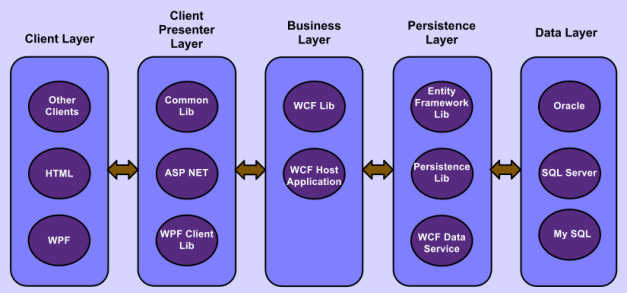
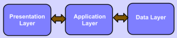
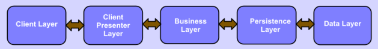

多层架构(N-Tier)
总览
N-Tier架构是一种被业界认同的软件开发架构模型。适合于企业级的C/S应用，以便用来解决应用的可扩展性、安全性、可容错性等问题。在.NET中有很多工具和特性用来实现N-Tier架构，但是这并不意味着.NET是一种预定义的实现N-Tier架构的平台。因此为了做到能够设计和实现一个好的N-Tier架构应用，完整地理解.NET中的概念是很重要的。但许多接触过或者使用过N-Tier多年的人仍或多或少地不能理解这其中的概念。
本文将尽量从各个方面来澄清N-Tier的一些基本概念，并提供一些实践技巧。这些实践技巧的前提是假定团队对N-Tier架构中的所有Layer有控制权。另外一篇文章使用.NET来阐述N-Tier架构实例： AN-Tier Architecture Sample with ASP.NET MVC3, WCF and Entity Framework.
N-Tier架构介绍
术语区分与联系
物理层和逻辑层(Tier And Layer)：在英文中都有"层"的意思，简单来说——物理层和逻辑层。有一种说法是Layer是水平方向切割的，Tier是垂直方向切割的，这个只是从观察角度不同来定义的。
- Term heading
- Description heading
- 物理层Tier
- Tier通常代表物理部署主机，通常一个独立运行的服务器就是一个Tier。几个服务器也可能被视为一个Tier，如一个服务容错集群。严格定义来说，Tier是这样的：客户机->web服务器->应用服务器->数据库，所以着重从物理上进行划分。如果想要更多的Tiers，只能去扩展应用服务器，把应用服务器分割出若干的Tier。
- 逻辑层Layer
- 相对比而言Layer一般是软件功能相似的组件逻辑组合,同时，Layer还暗示了"下面的Layer一般要为上面的Layer提供服务"，所以着重从逻辑上划分；Layer是为了能够更好的开发，更好的组织。Layer软件实现有很对优点，是一种实现N-Tier架构的很好的方式。更多时候，一个Tier可以Host多个Layer外，某个Layer可以分布到多个Tier,比如提供基础公共服务的Layer,对于富客户端的应用程序，就是这种情况。
Layer和Tier之间不一定能够相互匹配，一个Layer可以运行在一个独立的Tier上，多个Layer也可以运行在同一个Tier。
一个Layer也可能运行在多个Tier上。例如：
在图中我们能看到，持久层(persistence layer)包含了两部分：持久操作类库(persistence lib)和wcf数据服务(wcf Data Service)。持久操作类库在持久层中通常会和业务层运行在同一个进程，因为它充当了业务Layer访问WCF数据服务的适配器，而wcf数据服务，又可以单独的运行在独自的一物理层。另一个例子是，我们可能会从业务层中提取数据验证来作为独立的类库(此时逻辑定义上，数据验证还在业务层中)，是为了给客户展现层调用提供更好的交互性能。那这样的话，数据验证类库与客户展现层运行的同一个进程中，而业务层剩余的部分则单独运行在一个物理层。
另外一个例子：我们可以将业务Layer中的数据校验剥离出来形成一个独立的库（该库仍然在业务Layer中）。该库可以被客户端的持久Layer直接调用，以达到客户端交互性能的提升。则业务Layer中的数据校验部分会与客户端持久Layer运行在同一个进程中，而业务Layer的其他部分运行在另一个进程中。
物理层和进程(Tier And Process)
若一个Layer能够运行在一个独立的进程中。通常它也能够运行在一台独立的主机（Tier）上，故在N-Tier架构中它会视为一个独立的Tier。然而这个结论也不一定是对的。比如：假若存在两个被设计实现在两个独立进程中运行的Layer，它们之间相互通讯。若它们在用非分布式IPC通讯，如本地共享内存，则这两个进程只能运行在同一台主机上，除非它们之间的通讯采用分布式IPC（如socket）通讯，那么这两个Layer才有可能被视为两个独立的Tier。
逻辑层和进程(Layer And Process)
一个Layer可以运行在一个独立的进程中；几个Layer也可以运行在同一个进程中；一个Layer可以运行在几个进程中
三层架构(3-Tier架构)
一个最典型的N-Tier架构是一个从上到下依次继承的，包括表现Layer、应用Layer和数据Layer三个Layer的3-Tier架构

一个Layer只可以直接访问位于它直接下方的Layer的公共组件。例如表现Layer只能访问应用Layer中的公共组件，但是不能方位数据Layer中的公共组件；应用Layer只能访问数据Layer中的公共组件。而不能访问表现Layer中的公共组件。
这样做可使得Layer之间达到最小化的依赖。最小化的依赖将会在开发、维护、设计、系统扩容等方法带来益处。同样也可以达到尽可能的安全控制。例如客户端Layer不能直接访问数据Layer，只能访问应用Layer，因此数据Layer可以完成一个更高级别的安全管控。
这样做最终就可以避免软件组件上的相互依赖。
为了声明一个完整的3-Tier架构，三个Layer都应该运行在一台独立的主机上。
表示层(Presentation layer)：用户可以直接访问该Layer，如：桌面UI,WEB页面等.该Layer也可称之为客户端。
应用层(Application layer)：该Layer封装了业务逻辑(如业务规则和数据校验)、领域概念、数据访问逻辑等。该Layer也可称之为中间Layer。
数据层(Data layer)：存储应用数据的扩展数据源，形如DB服务器、CRM系统、ERP系统, 大型机或其他遗留系统等。我们常遇见的是DB服务器。在N-Tier架构中，我们需要使用非嵌入式数据库系统，如MySQL、SQL Server、DB2、Oracle或者PostgreSQL。非嵌入式数据库系统可以运行在一台独立的主机上。而嵌入式数据库如MS Access、Dbase等不能运行于一台独立的主机上。因此不能作为N-Tier架构中的数据Layer。
1、2、3或N-Tier架构
1-Tier：所有的逻辑层运行在一台计算机中，为了实现1-Tier架构，我们需要用到嵌入式类型的数据库系统，并且是不能运行在单独的进程中，相反，那些至少2-Tier因为是非嵌入式数据库通常可以在独立的计算机中运行。
2-Tier：展现Layer和应用Layer运行在同一个主机上。或者应用Layer和数据 Layer运行在同一台主机上。整个应用系统不能运行在多于2台的主机上。
3-Tier：N-Tier架构最简单的案例是：3个Layer分别运行在一台独立的主机上。实际上这3个Layer也可部署在同一台主机上（3-Tier架构应用，被部署为1-Tier系统）。
N-Tier：3或者更多层架构。
N>=3时都可称之为N-Tier架构。在图中描述了一个典型的N-Tier架构。一些三层类型可以进一步分割，变为多层架构。例如：应用Layer可以分为业务Layer、持久Layer甚至更多。展现Layer可以分为客户端Layer和客户端表现Layer。在图2中为了说明一个完整的N-Tier架构，客户端表现Layer、业务Layer和数据Layer分别运行在3台独立的主机（Tier）上。当然，同3-Tier一样，所有Layer也可以部署在同一台主机（Tier）上。

客户端层(Client layer:)：该层可被用户直接使用。存在几种共存的客户端，如WPF、Windows Form、HTML WEB页面等。
客户端表现层(Client presenter layer:)：包含客户端需要的展现逻辑。如ASP.NET、IIS WEB服务器中的MVC。也是不同客户端访问业务Layer的适配器。
业务层(Business layer)：处理和封装了所有的业务模型和逻辑，也称之为领域Layer。
持久层：处理业务数据在数据 Layer上的读写操作。也称之为数据访问Layer（DAL）
数据层：扩展数据源，如一个数据库系统。
注：有时，Tier的数量大于等于3，但是客户端展现Layer、业务Layer和数据Layer不能够分别运行在一台独立的主机（Tier）上。那这是一个N-Tier架构么？我们将其定义为非完全N-Tier架构，这是因为客户端展现Layer、业务Layer和数据Layer不能够分别运行在一台独立的主机（Tier）上。 若我们采用现代非嵌入式数据库如SQL Server、Oracle等，那么数据库系统将能够运行在一台独立的主机上，因此，在图1给出的案例中，标准的2-Tier架构中展现Layer和应用Layer只能运行在同一台主机上；标准的3-Tier架构中展现Layer和应用Layer分别运行一台主机上；一个完整的N-Tier架构和3-Tier架构的标准是一致的。
N-Tier与MVC架构有什么区别
MVC模式(Model-View-Controller)是软件工程中的一种软件架构模式，把软件系统分为三个基本部分：模型(Model)、视图(View)和控制器(Controller)。
1.控制器(Controller)- 负责转发请求，对请求进行处理。
2.视图(View) - 界面设计人员进行图形界面设计。
3.模型(Model) - 程序员编写程序应有的功能（实现算法等等）、数据库专家进行数据管理和数据库设计(可以实现具体的功能)。

就拿多层架构中最典型的三层来说，在三层中，数据访问层(DAL)、业务逻辑层(BLL)，Web层各司其职，目的是职责分离。MVC是Model-View-Controller。严格说起来这三个加起来才是三层架构中的Web层，换种说法就是MVC就是表示层中再度分化，分成了控制器、视图、实体三个部分。View完成页面逻辑，Model则封装需要传递到View进行显示的数据，而控制层则与三层中的BLL进行通信。
MVC的优点：耦合性低、重用性高、部署快、可维护性。
Tier架构的优点和缺点
1 or 2-Tier 架构
优势：适用于低用户量系统，系统占用少量的进程和Tier，架构简单。在硬件、网络、维护和部署上成本较低。
劣势：但当用户数量增大时，将会出现大问题。由于只能部署1到2台计算机，在程序的安全性、可扩展性、容错性等方面会有局限性。
N-Tier架构
优势：
可伸缩性。这是由于多层的功能和低耦合性所决定的。比如，由于没有其他层的耦合，数据层可以扩大数据库集群，web客户端可以通过负载平衡器扩大而不影响其他层，Windows服务器可以轻松进行集群通过负载平衡和故障转移。
可安全性。更好和更安全的控制整个系统，我们可以对每个层执行不同的安全策略，比如，业务层和数据层通常比表示层需要更高的安全级别，我们可以把这两高安全层放在防火墙后面进行保护。
可容错性。比如，在不影响其他层的情况下，数据库在数据层中可以为故障转移，进行负载平衡集群。
可独立性。在不影响其他层情况下，可以进行独立升级和改变。在面向对象世界里，接口依赖实现可以把所有层解耦的非常好，那么就会导致如果其中某一层改变了，对于其他层是影响是非常小甚至是不影响。接口依赖意味着层跟层之间仅仅通过接口来互相通信，一层依赖于另一层的接口，而不是内部类来通信。当然，在改变整个系统时候，层的依赖性影响到的只是他低层次的实现，进而把其中副作用的影响降到最低。比如，如果接口不改变，在不影响整个系统下，我们可以更改或替换这个接口所实现的层。
可便捷性。更便捷和更高效的开发环境，解耦主要是通过软件组件组合来实现某一模块，这样软件开发是非常便捷和高效的。可以把每一层要实现的功能单独分配给不同的开发组，只需通过接口来互相通信，每个层又可以自己做单元测试，到最后完成时组合起来就变成一个完整的系统。
可维护性。
可扩展性。由于对业务开发是以组件式来的，对于新功能的添加和删除是非常方便的。
可重用性。由于是高内聚和低耦合，通用的功能和代码可以重复使用，也可以被其他更多的应用程序调用。
劣势：
由于N-Tier采用更多的主机、网络和进程，因此当硬件和网络的带宽不足够好的话，会是的整个应用的性能降低。
更多的硬件、网络、维护和部署成本。 在N-Tier部署应用程序的性能效果是一个自我冲突的问题。一方面若用户的数量不够高，则性能会由于过多的主机、进程和网络而变得低下。也就是说，若用户量少时将所有的应用逻辑集成到一个Tier或一个进程内会获得更好的性能。然而，若用户量增大时，N-Tier架构的可扩展性将带来整个性能的提升。如N-Tier架构中的负载均衡和数据库集群会提升系统的性能。
为什么在用户量低和高时N-Tier的性能结果是不同的？这是因为这两种情形下整个应用的瓶颈是不同的。在用户量小时应用的瓶颈在于进程间通讯时所花费的时间，有更多的主机、进程和涉及更多的网络，则花费的时间就更多。于是性能就会降低。然而，当用户量增大时由于服务器的能力（例如在同一台主机上CPU和内存资源的竞争、服务器上数据库的限定、WEB服务器处理能力的限制等）使得净瓶发生了转移。只有N-Tier架构能够解决这些瓶颈问题。通常使用服务器集群的负载均衡来对应N-Tier架构的可扩展性。通过更多的主机来分流大用户量的请求任务。这样性能就可得到提升。N-Tier架构除了通过可扩展性提升了性能之外，我们也可以通过更好的硬件和网络带宽来提升性能，以满足业务需求。
多层架构中的业务数据验证
为了能够保持整个业务系统的健壮和完整，在N-Tier架构中数据检验是重要和必须的。关于数据校验的第一个问题是：数据校验要在哪一个Layer或者什么地方实现？对于这个问题，有一些规则和事实，可以给我们一些提示或者能够回答这个问题：
数据校验要在任何一Layer执行，通常在越靠近客户端Layer的地方完成校验，性能则会越高效。越远离客户端Layer的地方实现校验，则应用会有更高的可靠性和鲁棒性。当校验在业务Layer或者持久Layer实现时。不论客户端是否进行校验都可以保证数据会被校验。
当我们决定在哪一个Layer完成校验时，我们需要实现在性能、可靠性和鲁棒性之间的平衡，同时我们也需要考虑实际的情况。若我们对所有的Layer有控制权，那么我们可以在所有的客户端和客户端展现Layer实现校验，这样以便获得性能的提升。但若业务Layer暴露给一些在我们控制范围之外的客户端或者客户端展现Layer，为了保证可靠性和鲁棒性，无论我们的客户端是否实现校验，都要在业务Layer或者更底层的Layer上实现校验。
在客户端测进行校验是高效的，例如在WEB页面中采用Javascript完成校验。但是用户可以很容易地绕过客户端的校验，例如页面黑客行为。因此为了性能和可靠性，在客户端侧和服务端侧都需要实现校验。业务Layer和其他更低的Layer通常属于服务端。客户端展现Layer可以在服务端，也不可在客户端；
一个WEB服务器的客户端展现Layer如ASP.NET会在服务端，WPF则不在服务端。
一种更好的实践方法是：从性能角度考虑在客户端完成一个简单的校验，从可靠性考虑在服务端完成完整的校验。
简单的数据校验主要是一个实体实例简单属性的检查。完成的数据校验包含简单数据校验，且有一些复杂的数据验证。复杂数据验证包括在一个实体实例中跨越多个属性的类级数据验证、跨越多个相近或者不同类型的实体的属性数据校验。
对于一些交互客户端应用，不论我们是否在服务端进行数据校验，我们都需要在可接受的交互性能范围之内完成客户端侧的校验。
一些游戏类应用就属于这种类型。
不论在什么地方实现数据校验，我们应该在一个地方实现和维护一个版本的数据校验逻辑。所有的Layer共享这一个版本的校验逻辑。
为什么？这样做的目的在于有更好的可复用性，它避免了源代码的重复和校验逻辑的冲突，使得开发和维护容易些；保证在整个应用中校验逻辑的一致。
另外校验逻辑会随着业务的变化而变化，保持一个版本的校验逻辑且要保证它的灵活性，要能够根据需要被任意一个Layer灵活地调用。
如何正确的部署N-Tier架构应用
更多的Tier带来了更多的系统复杂性，更多的部署和维护成本和时间。因此Tier的数量应该控制在足以解决诸如可扩展性、安全性和容错性等问题时的最小值上。在解决需要的问题的基础上，不要部署多余的Tier。 通常为了能够尽可能好的解决这些问题，我们至少需要3-Tier。在某些情况下若这些问题我们并不关注，则可以选择1-Tier或2-Tier架构；或者将N-Tier架构实际部署到1/2-Tier上，以便获得性能的提升。
那么最佳的Tier数量是多少？这个没有固定答案，需要根据我们的业务需求而定。我们需要选择一个在N-Tier架构中优点和缺点之间最佳平衡点的Tier数量。 我们给出如下两个不同案例：
a)所有的Layer运行在一个主机的一个进程上。
b)所有的Layer分别运行在同一台主机的不同进程上。 案例1实际上是一个1-Tier架构 案例2通常是一个进行1-Tier部署的N-Tier架构。 在两个案例中虽然都是部署在一台主机上但是由于1-Tier架构中有更少的进程参与所以会有更佳的性能。多进程通讯协作运行比一个进程运行会更复杂和缓慢，不论采用什么样的IPC通讯技术（TCP/IP、命名管道、消息队列或者是共享内存等），因此在一个部署主机上，我们应该保持尽可能少的应用进程数量，以获取更好的性能。但是如何实现呢？ N-Tier架构可以采用如下的方式实现：仅通过配置文件即可很容易的升级某一个Tier。 这里有一篇详细的实例应用文章章：AN-Tier Architecture Sample with ASP.NET MVC3, WCF and Entity Framework.
实践中对于N-Tier架构基于多方面的原因会有很多改变。例如：为了能够获得更好的交互性能，需要将客户端展现Layer和业务Layer置于同一个进程内。若有兴趣你可以自己进一步探索和研究这个主题。 另外：3-Tier架构可以部署在小于等于3的Tier上。但是一个2-Tier架构不能部署在3-Tier；否则它就应该叫3-Tier架构了。
如何通过软件技术完成N-Tier架构的部署
N-Tier的主要特性是：为了处理诸如可扩展性、安全和容错性等问题而将一个或者多个layer部署在不同主机上的能力；相关联的Tier之间需要相互通信。那么这些是如何实现的呢？应用运行在一个进程中极为一个Tier，那么两个Tier之间的通讯实际上归纳为IPC通讯问题。分布式IPC通讯可以支持跨主机的两个进程之间的通讯，如socket、分布式消息队列等。那么本质上这些分布式IPC通讯方法有能力支持N-Tier的部署。 例如：若两个Tier采用TCP/IP socket方式进行通讯，那么这两个Tier可以部署在不同的主机上。在.NET中自WCF支持相同或不同主机上进程间通讯时，WCF可以很容易地完成N-Tier的部署；WCF基于IPC方法构建而成。采用WCF部署N-Tier的优点是WCF可以实现SOA。而SOA可以实现Layer之间的松散耦合。
在N-Tier架构开发中的实践技巧
设计、实现、部署和维护一个N-Tier架构应用一件困难的工作。若你再开始没有一个清晰的思路，那么最后你可能会在这里或者哪里走弯路而浪费时间。我们已经讲了一些关于部署和数据校验的实践技巧，这里我们再给出一些关于N-Tier架构开发的实践技巧。这些实践的前提是假定一个团队对N-Tier架构应用的所有Layer有完全的控制权。
通过一些松散耦合技术尽可能完成Layer之间的解耦，例如通过SOAP XML和接口等。在OO开发中，每一Layer仅仅依赖其直接下一个Layer的接口，而不依赖其具体类。这样做我们可以实现Layer之间最大化的解耦，这将会给开发、单元测试、维护、升级、Layer内部变化、可复用性等带来很多的益处。
尽可能尝试采用自动化工具来维持一个版本的可在整个业务系统中被复用的POCO业务实体类，为什么？业务实体类是N-Tier架构的基础，它们传递着从最高层Layer到最底层Layer的信息。如今的业务应用往往会变得越来越庞大，因此手动创建这些业务实体类会很困难且易出错，尤其是有些人喜欢在不同的Layer上采用不同的版本。
所以建议在整个应用中，应当尽量使用一个采用自动化工具生成的实体类的轻量级版本。这样做可接节省很多时间，且可以消除进行不同版本管理带来的弊端。
如今有很多的代码生成工具可供我们选择，如Entity Framework代码生成器。当然对于不同Layer的实体类可能会有不同的需求，我们可以使用System.ComponentModel.Annotation的注释功能和C#中的局部类来限制和扩展代码生成器，以对应特别Layer上实体类的特别需要。
使用一些自动化工具或者包完成业务实体类与传统关系数据库（数据Layer）之间的映射。现代业务系统和数据变得越来越庞大，采用手动方式完成它们之间的映射麻烦且易出错。有很多存在的工具或包可以帮助我们完成这项工作，如.NET中的Entity Framework和NHibernate，Java中的Hibernate。
处理大量的风格相似的代码时尽量使用代码生成器。若没有找到适合你目的的代码生成器，使用OO开发语言（如C#、Java）和XSLT（扩展样式表转换语言）自己开发一个。这不会很困难，XSLT是一个基于XML的语言，它可以很好的适应于代码生成器的处理目的，因为XSLT可以很容易地将XML文档转换成任何文本文档。
业务Layer和持久Layer是很容易紧耦合的；应该注意和避免这个问题。例如：在.NET中WCF业务服务可以直接访问Entity Framework，这种情形很常见。然而这么做的话，业务Layer和持久Layer就紧耦合了。进而会在Layer的单元测试、升级、内部更改上出现问题。通常的解决方法是在两个Layer之间加一个适配器，这样就可以通过接口进行解耦了。具体实例可以参阅另一篇文件：AN-Tier Architecture Sample with ASP.NET MVC3, WCF and Entity Framework.
在客户端表现Layer，应当将所有客户端使用的公共代码形成一个单独的库，以便能够达到代母最大化得复用。
在每一个Layer中加入一个缓存Layer，可以提升性能。例如在ASP.NET中可以使用Varnish加速器、Drupal或其他WEB应用作为缓存Layer设置在客户端Layer和客户端 展现Layer之间。在PHP应用中可以采用Memcached和APC cache作为缓存用来缓存业务数据。请求会到缓存中查找数据，若数据有效，请求会直接使用该数据而不必到其他Layer中获取数据，这样性能就会得到提升。注意的问题是：缓存中的旧数据要及时的更新和清理。在.NET 4中名字空间System.Web.Caching可被用作ASP.NET的缓存；名字空间System.Runtime.Caching也可以用作缓存，不仅仅是在ASP.NET中。Enterprise Library中的Caching Application Block也可作为缓存使用。
为了能够适应变化的业务需求和技术，能容易、灵活地进行任何形式的部署（包括2-Tier架构的部署）是一种很好的实现方式。
例如：通过键值对式的配置文件对N-Tier架构中的Tier进行替换更新。具体实例可以参阅另一篇文件：A N-Tier Architecture Sample with ASP.NET MVC3, WCF and Entity Framework.
结论
描述了多层架构的概念和定义，介绍多层架构中的典型代表——"三层架构"。并说明了一个完整的三层架构应该是表示层、应用层、数据层分别运行在单独的计算机中。并描述了三层架构和MVC架构之间的关系，应该是属于和被属于的关系。分析了多层架构的优势和劣势，在多层架构中的数据验证的重要性，最后说明在多层架构中可以用到的一些工具和技术技巧，谨记层和层之间的通信是通过接口来交互，而不是内聚类，那样才会做到开发时模块的高内聚和通信的低耦合。
一个完整的3-Tier架构应该是：展现Layer、业务Layer和数据Layer能够运行在独立的3台主机上（参见图1）。一个完整的N-Tier架构应该是：客户端持续Layer、业务Layer和数据Layer至少能够运行在独立的3台主机上（参见图2）。一个Layer能且只能直接访问位于它直接下层的Layer的公共组件。这样做可以达到Layer之间最小化得依赖。且可以达到Tier尽可能的安全。一个N-Tier架构有最佳的可扩展性、安全性、容错性等。
Tier通常代表的是物理部署主机。Layer通过代表的是通过功能区别的软件逻辑组件组。Layer是实现N-Tier架构的一种通用和最好的途径。Tier和Layer可以是对等的，也可以是不对等的。一个layer可以运行在一个独立的Tier上，也可以运行在多个Tier上。多个Layer可以只运行在一个Tier上。
如果一个Layer运行在一个独立的进程上，那么通过它可以运行在一个独立的主机（Tier）上。然而这也是不一定的。如果该进程同另一个进程采用非分布式IPC方式通讯，那么该进程不同运行在一台独立的主机（Tier）上。
N-Tier架构有以下优点：良好的可扩展性、更好和更精细的安全控制、良好的容错性、独立的Tier升级和更新，而不影响其他Tier的能力、可进行友好和有效的开发和维护、友好的进行新特性的添加、更好的复用性等。
若将一个非嵌入式数据库（如MS SQL Server、Oracle等）作为数据Layer，那么这个数据库可以一直运行在一台独立的主机（Tier）上。在图1给出的实例中，一个标准的2-Tier架构系统中展现Layer和应用Layer只能运行在同一主机上；标准的3-Tier架构系统或者N-Tier架构系统展现Layer和应用Layer可分别运行在一台主机的主机上。
过多的Tier会带来过多的系统复杂度、开发和维护时间和花费。因此Tier的数量应当保持在能够解决诸如可扩展性、安全、进行故障转移等问题时所采用的Tier的最小数量上。从性能角度考虑，应当根据实际问题决定Tier的数量，不要过度的部署多余的Tier。另外在一台部署主机上，应当保持一定数量进程数，以满足性能的需求。一个良好的架构设计可以很容易的满足这些需求。
分布式IPC通讯（如socket）可以让一个Layer进程部署于一个Tier上。在.NET中，WCF是实现N-Tier架构的一种良好的方法。
在N-Tier架构中关于业务数据校验有如下的事实和规则：
任何一Layer均可以实现业务数据校验，通常，在越靠近客户端Layer的Layer实现业务数据校验,应用的性能就会越高；越在远离客户端Layer 的Layer上实现业务数据校验，应用的可靠性和鲁棒性就会越高。当在业务Layer或者持久Layer上实现校验时，任何形式的访问数据都会进行数据校验。
我们需要考虑清楚如何在诸如性能、安全、可靠性和系统鲁棒性等之间的平衡时，才能决定在哪一个Layer上实现业务数据校验。同时我们也需要考虑项目的实际情况。
在客户端实现校验是有效的，如在WEB页面的在用JS进行校验，但是一些WEB黑客一样。用户有意或者恶意地绕过客户端的数据校验。因此需要在客户端和服务端同时实现校验，而服务同时需要考虑由此带来的性能和可靠性方面的问题。
一个更好的实践方法是：从性能角度考虑在客户端实现简单的数据校验；而在服务端则从可靠性角度考虑实现数据的完整校验。简单的数据校验指的是：对实例实体进行简单的属性值校验。完整数据校验包括简单数据校验和一些复杂校验，如进行实体实例多个属性值之间的检验或者多个相近或不同类型实体实例之间的校验。
对于一些交互式客户端应用，不论是否要在服务端实现数据校验，我们都需要在客户端实现数据校验，以满足应用的交互性能。游戏类应用就属于这个范畴。
应当在一个地方实现和维护一个版本的校验逻辑，所有Layer共享这个版本的校验逻辑。这样做可以达到更好的复用、开发维护和部署更加便捷，同时也使得校验逻辑贯穿整个应用。
假定开发团队能都对所有的Layer有控制权，在进行N-Tier架构应用开发时，有如下一些扩展实践技巧：
尽可能地采用一些形如SOAP XML或接口的低耦合技术， 进行Tier之间的解耦。在OO开发方式下，一个Tier只能依赖其直接下层的Tier的接口，而不能依赖其实现。这样做的目的是可以实现Tier之间最大化的解耦。解耦将会带来在开发、单元测试、维护、升级、内部组件修改能力、可复用性等方面的益处。
尽可能采用自动生成和维护工具来管理应用于整个应用系统中的POCO业务实体类的一个版本。这样可以减少版本冲突、版本映射、手动编码带来的错误。
采用一些自动工具来完成业务实体类和传统数据库（数据Layer）之间的数据映射。例如Entity Framework、.NET中的NHibernate、Java中的Hibernate。
进一步讲，对其他大量的和风格相似的代码也要尽可能采用代码生成器管理。如果没有适合你用途的代码生成器，自己开发一个。C#、Java、XSLT等技术可以使得你很容易的完成一个代码生成器的开发。
业务Layer和持久Layer很容易紧耦合；我们可以通过在两个Layer之间加入一个适配Layer，这样就能过通过接口（适配Layer）来降低这两个Layer的耦合度。比如WCF业务Layer和Entity Framework之间的持久适配器就是一个适配Layer。
在客户端持久Layer，要将所有的客户端的共用代码封转到一个独立的库中，以达到对所有客户端最大化的代码复用。
在每一个Layer中加入一个缓存Layer，可以提升系统的性能。
为了能够适应业务需求和技术的变更，将N-Tier架构设计实现成通过键值对配置文件来配置Tier架构，这样可以通过更新配置文件中键值对的方式，可以简单地替换不同的Tier架构。